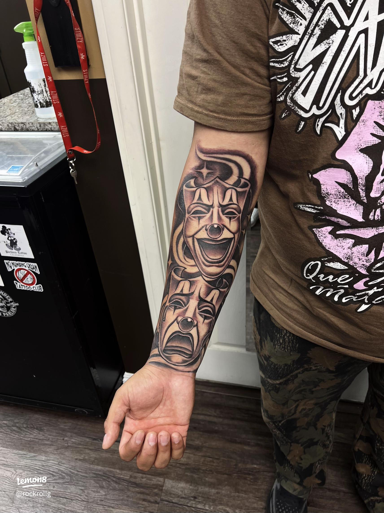
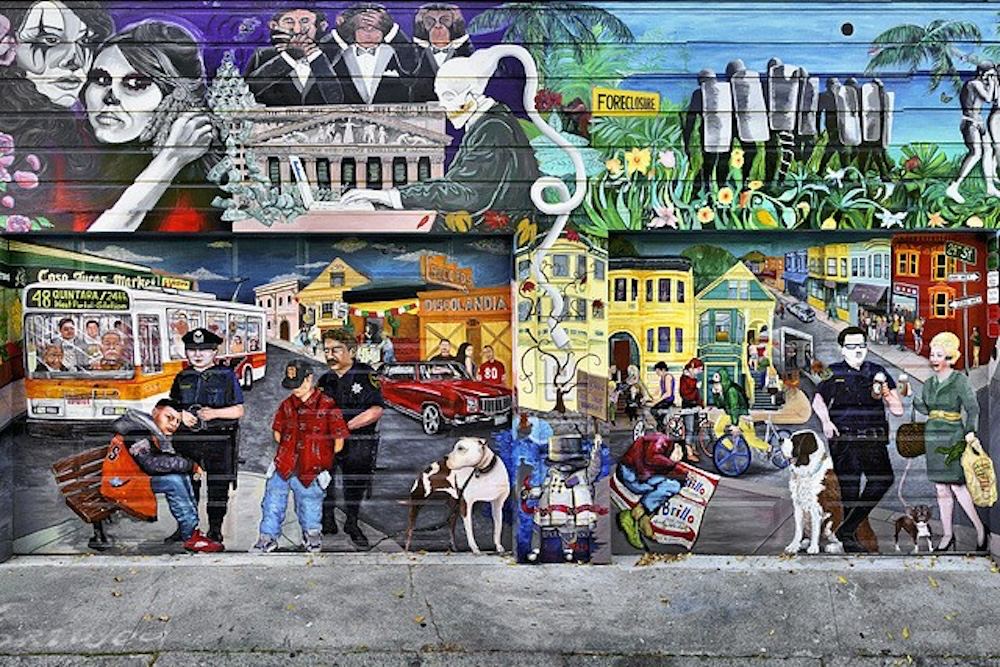

Jose Guadalupe Posada

Jose's work to me is very interesting because its a style I grew up seeing a lot with ads, news papers, and political messages. I really like how Jose creates these cartoon skull like figures yet the message behind them is very powerful and not playful.
I got this image from the website Reclin Murphy Museum of art
Herchell L Carrasco Aka RockRollG

Rockrollg is a tattoo artist based in LA he does very oldschool art pieces combining new era style and old school chicano prison artwork.
His artwork inspires me because hes a chicano like myself he is proud of who he is and where hes from and the culture he grew up with.
This image was grabbed from Lemon8 a website that people can upload inspirations.
Lucia Ippolito

Lucia Ippolito is a mural artist who tells stories from her eyes of what shes seen in the mission district a very loved but complicated neighborhood.
Her artwork inspires me because I also grew up in the same neighborhood her art depicts and I also have experienced some of these stories she tells through her artwork first hand.
Image attribution: From an independent local news website